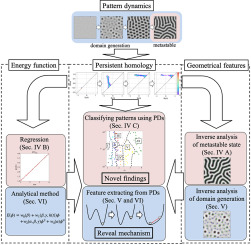
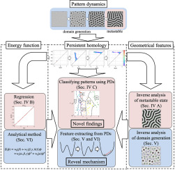

解釈可能AIを用いたデータ駆動理学に興味のある大学院生（修士・博士課程）を募集します。研究対象は物理学、情報科学や社会科学等の森羅万象あらゆる分野に存在する複雑現象（パターンダイナミクス）です。研究室を見学したい方は、お気軽にy.mototake_at_r.hit-u.ac.jpまでご連絡ください。なお、博士課程は2025年より開設されます。 入試情報
2024年6月くらいから、物理学と幾何学についての本、または統計的機械学習についての本の輪読を行う予定です。輪読にご興味のある方は、y.mototake_at_r.hit-u.ac.jpまでご連絡ください。
 A. Okuno, Y. Morishita, Y. Mototake, "Autoregressive with Slack Time Series Model for Forecasting a Partially-Observed Dynamical Time Series," IEEE Access, (2024).

A. Okuno, Y. Morishita, Y. Mototake, "Autoregressive with Slack Time Series Model for Forecasting a Partially-Observed Dynamical Time Series," IEEE Access, (2024).
